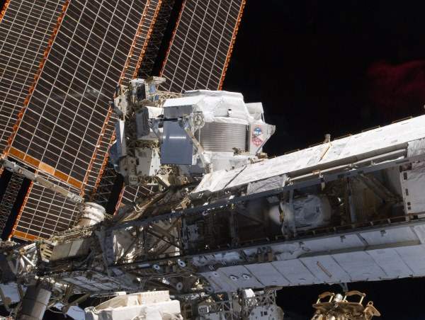
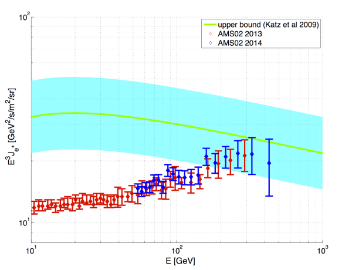

2014-09-30 23:25:00
两個禮拜前（2014年九月18日），丁肇中所領導的阿爾法磁譜儀（AMS-02，Alpha Magnetic Spectrometer）計劃發表了最新的數據。一時之間，中美的主流媒體紛紛報導了這個新消息，無一例外地轉印了丁肇中自己所宣傳的AMS-02“即將發現暗物質”的大突破，例如昨天這篇中時的文章：http://www.chinatimes.com/newspapers/20140930000497-260109。
AMS-02是什麼寳貝呢？它是專門測量宇宙線中高能電子和其反粒子（即“正子”，Positron）的運動方向與速度的一個儀器；因為高能電子和正子不能穿透大氣層，AMS-02必須裝在國際太空站（International Space Station）上。它與以往的類似儀器相比，在精確度和敏感度上都强了幾十倍甚至上百倍，在工程上可以稱之為Tour de Force而無愧，其研究的結果當然也是創人類之先例，對物理的進步有很大的意義。

為了將阿爾法磁譜儀裝在國際太空站上，美國國會通過了特别法案，要求原本已將退役的太空梭在2011年多跑了最後一趟。不過阿爾法磁譜儀的確比國際太空站上所有的其他科學實験加起來還重要多了。
一個好的實験物理的主管，必須滿足两個任務：第一個是能向政府要到資金和資源，第二個是能管理成千上百的物理博士和工程師，逼他們拼命工作，而且還要確定一點差錯都没有。丁肇中可以說是這個世代裡實験物理主管中的超級大師：當太空梭因為安全性問题被勒令提早退役後，他竟能讓美國國會通過特别法案，為了他的實験而專門多做最後一次發射。這難度之高，幾乎已經超出人力之所能。而在管理的嚴格上，丁肇中也是聲名遠播；他在美國和歐洲的工作組，即使在聖誕夜也不休假。在歐美住過的人，都知道這是如何地不可思議。

AMS-02的實験結果，横軸是正子的能量，縱軸是正子流的强度。紅色的是去年發表的，藍色的是今年的數據，綠線是所謂的Katz上限。物理學家對AMS-02的興趣在於其結果服從Katz上限，而Katz理論和暗物質一點關係也没有。
總結來說，AMS-02是一個很困難、很重要也很成功的實験，唯一的問题在於它和暗物質没什麼關係。這是因為它測量的是電子流和正子流；雖然暗物質有大於或等於零的可能會碰撞而產生電子和正子，宇宙中的幾兆兆兆兆兆兆個天體個個都會產生電子和正子，而天文物理學家基本上是不知道哪一種天體會產生多少電子和正子的。這就好比丁教授到一座荒山上随機撿了幾個石頭，然後就宣布他將發現新品種的恐龍。對真正的物理學來說，AMS-02的重要性在於丁教授是世界上登上這座山的第一人，這些石頭是人類第一次從這座山上拿到的。當然這些石頭是化石的可能性不完全是零，可是拿這個極為微小的可能性來大作文章，是非常不誠實的；用英文來說，就是Bullshit（牛屎），亦即以謊話哄騙自己或别人。
我在三十幾年前選擇念物理的時候，天真地以為科學的真諦在於追求宇宙法則的真相，所以物理學家應該有一分證據說一分話。很不幸地，我所進的高能物理在1984年經歷了本質上的蛻變，也就是當時全世界最聰明的理論物理學家Edward Witten決定全心投入超弦（Super-String）。本來在錯誤的方向嘗試幾步，是科學發展中的常事，但是Witten其實喜歡的是數學，而超弦可以讓他玩很多新數學把戲，所以雖然超弦必須作很多很牽強很不實際的假設，Witten還是一做就入迷了；而剛好1970年代完成的“標準模型”（“Standard Model”）的適用範圍之廣大遠超任何人的想像，從那時起到今天四十多年，仍然没有任何一項實験結果能超出標準模型的計算範圍，也就没有任何實験結果能告訴我們如何解決標準模型裡的一些很明顯的問题。可是學術界的人是必須“出版或死亡”（Publish Or Perish）的。既然没有實験結果的引導，那就只能跟着大師來猜，而Witten就是人人佩服的天才大師。最後整個高能物理界，一個一個跟着Witten進了超弦這個死亡迷宫，像我這様覺得超弦和實際的宇宙没有關係而不願進去的，就只能離開物理界。
大約15年前，高能物理界已經基本超弦化。可是超弦不但編出的故事和現實無關，它每隔四五年還自打一次嘴巴，編出完全自相矛盾的新故事。到最後，超弦被證明了完全没有作任何預測的能力，也就是說，無論你做什麼實験，得到什麼結果，超弦都不在乎。可是科學的定義，就在於可以用實験來證偽（光有證實的可能性是沒有意義的；例如上帝隨時可能現身開記者會，從而證實他的存在，但是上帝的不出現卻不被信徒接受是他不存在的證據，所以基督教不是科學）那個理論。我們這些腦筋轉不過來的舊派物理人，因此認為超弦不是科學；可是學超弦的新物理派，則倡議重新定義何為科學。這時有一個我在哈佛物理的前期學長，叫Peter Woit，也被排擠出高能物理界；但他比我還頑固多了，不肯離開學術界，只好到哥倫比亜大學（Columbia University）做數學講師。他決心靠一己之力來揭穿超弦的大騙局。於是他創辦了一個部落格，叫做Not Even Wrong（意即不知所云，連對錯都說不上；這對超弦來說，非常貼切，因為科學裡面所謂的對錯，就是是否與實験符合。這個部落格對我現在寫自己的部落格有很大的啟發）。剛開始的時候，靠着不知所云的超弦論文當上教授的人，對他輪番攻撃，但是他心平氣和地跟他們講理，後來超弦那方的人只能以人身攻撃，譏笑他連助理教授都做不上。不過真理在有頭腦的人之間，是越辯越明的。到最近幾年，超弦已經被科學界公認是騙人的把戲，整個高能物理界開始傳為學術圈的笑柄（Butt of Jokes)，Woit可居首功。可是教授是終身制的，過去30年能當上高能物理教授的絶大多數是做超弦的，他們講理講不過Woit，就靠開記者會、寫介紹性書籍和上公共電視來對不明究裡的普羅大眾宣傳超弦的謬論。這對整個物理界的風氣有很不好的影響，以致後來連實験物理學家也開始亂開記者會，胡吹牛皮。
丁肇中教授在忽悠美國國會的時候，扯上暗物質這個熱門題材或許無可厚非；現在已經無關成敗，還在欺騙大眾就不應該了。一般的記者當然不知其所以然；我既有了這個部落格，又知道事實真相，就有責任出來說實話，只希望台灣大眾對明辨是非真假，還是在乎的。
【後註】今天是2020年五月6日，在《觀察者網》看到一篇報導（參見https://user.guancha.cn/main/content?id=302617&s=fwzxhfbt）說歐美的學術期刊主動抓了49篇中方的造假論文；這等於是外國人幫忙做了鑒定假大空的工作，中國的高等教育管理單位實在沒有不作爲的藉口。但是依他們的習性，繼續和稀泥、坐看國家核心知識技術體系的腐爛才是最可能的結果。